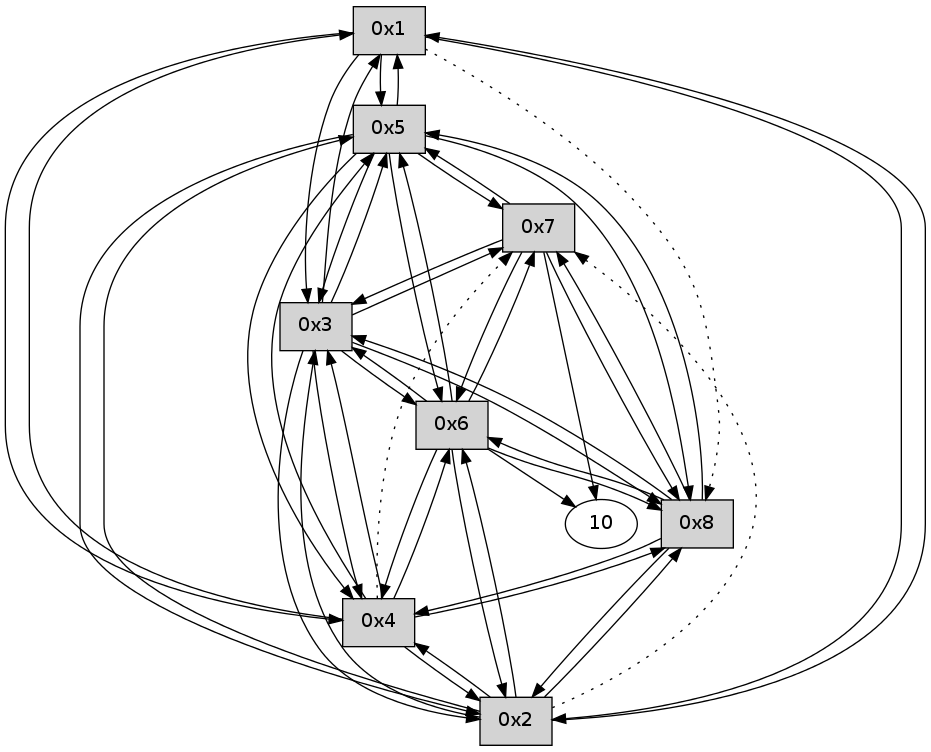

>> << IDX [start] -100 -25 -5 +0 +5 +25 +100 [140.410686016]
 Previous packets
135.018610 PARSE ERROR************************
Traceback (most recent call last):
File "PacketAnalysis.py", line 167, in showOperaPacket
structPacket = OperaPacketParse.parsePacket(rawPacket)
File "/home/user/HgRep/OCARI-2014/Sniffer-OPERA/OperaPacketParse.py", line 461, in parsePacket
return parseHelloMessage(data)
File "/home/user/HgRep/OCARI-2014/Sniffer-OPERA/OperaPacketParse.py", line 109, in parseHelloMessage
sysInfo,stability,colorInfo = struct.unpack("!HBB", linkList[0:4])
error: unpack requires a string argument of length 4
48 26 01 00 00 21 00 02 02 08 05 00 03 00 02 00 04 00 01 02 08 00 53 04 00 00 00 00 4c 0a 00 0e 00 00 00 0d 00 0e 00 00 53 e7
----------------------------------------------------------------------
135.681865 beacon01(11f6) #0 coord=01,02,03,04,05,06,07,08,0a,09 cycle=688.0ms assoc
-- color-indic=0 64 8b f2
135.692044 beacon02(11f6) #0 coord=01,02,03,04,05,06,07,08,0a,09 cycle=688.0ms assoc 64 18 c3
135.702000 beacon03(11f6) #0 coord=01,02,03,04,05,06,07,08,0a,09 cycle=688.0ms assoc 64 62 8e
135.712001 beacon04(11f6) #0 coord=01,02,03,04,05,06,07,08,0a,09 cycle=688.0ms assoc 64 15 64
135.722001 beacon05(11f6) #0 coord=01,02,03,04,05,06,07,08,0a,09 cycle=688.0ms assoc 64 6f 29
135.732001 beacon06(11f6) #0 coord=01,02,03,04,05,06,07,08,0a,09 cycle=688.0ms assoc 64 e1 fe
135.742001 beacon07(11f6) #0 coord=01,02,03,04,05,06,07,08,0a,09 cycle=688.0ms assoc 64 9b b3
135.752005 beacon08(11f6) #0 coord=01,02,03,04,05,06,07,08,0a,09 cycle=688.0ms assoc 64 1e 22
135.787541 [Hello(3): seq=33 sym=1,2,7,5,6,8,4 sysInfo= stat=1:1,0,0,0/2:14,0,0,0/7:13,0,0,0/5:14,0,0,0/6:15,0,0,0/8:0,0,0,0/4:0,0,0,0]
135.801539 [Hello(5): seq=33 sym=1,2,7,6,3,8,4 sysInfo= stat=1:1,0,0,0/2:14,0,0,0/7:13,0,0,0/6:15,0,0,0/3:1,0,0,0/8:0,0,0,0/4:15,0,0,0]
135.824459 [Hello(6): seq=33 sym=10,7,5,3,8,4,2 sysInfo= stat=10:12,0,0,0/7:12,0,0,0/5:13,0,0,0/3:0,0,0,0/8:0,0,0,0/4:13,0,0,0/2:3,0,0,0]
135.850874 [Hello(4): seq=33 sym=1,2,5,6,3,8 asym=7 sysInfo= stat=1:0,0,0,0/2:15,0,0,0/5:0,0,0,0/6:0,0,0,0/3:1,0,0,0/8:15,0,0,0/7:4,0,0,0]
135.880253 [Hello(2): seq=33 sym=1,5,3,8,4,6 asym=7 sysInfo= stat=1:0,0,0,0/5:15,0,0,0/3:1,0,0,0/8:0,0,0,0/4:14,0,0,0/6:14,0,0,0/7:13,0,0,0]
135.920460 [Hello(8): seq=33 sym=2,7,5,6,3,4 sysInfo= stat=2:14,0,0,0/7:14,0,0,0/5:14,0,0,0/6:1,0,0,0/3:15,0,0,0/4:15,0,0,0]
----------------------------------------------------------------------
136.470002 beacon01(11f6) #0 coord=01,02,03,04,05,06,07,08,0a,09 cycle=688.0ms assoc
-- color-indic=0 64 37 f7
136.480165 beacon02(11f6) #0 coord=01,02,03,04,05,06,07,08,0a,09 cycle=688.0ms assoc 64 a4 c6
136.490138 beacon03(11f6) #0 coord=01,02,03,04,05,06,07,08,0a,09 cycle=688.0ms assoc 64 de 8b
136.500137 beacon04(11f6) #0 coord=01,02,03,04,05,06,07,08,0a,09 cycle=688.0ms assoc 64 a9 61
136.510138 beacon05(11f6) #0 coord=01,02,03,04,05,06,07,08,0a,09 cycle=688.0ms assoc 64 d3 2c
136.520139 beacon06(11f6) #0 coord=01,02,03,04,05,06,07,08,0a,09 cycle=688.0ms assoc 64 5d fb
136.530139 beacon07(11f6) #0 coord=01,02,03,04,05,06,07,08,0a,09 cycle=688.0ms assoc 64 27 b6
136.540142 beacon08(11f6) #0 coord=01,02,03,04,05,06,07,08,0a,09 cycle=688.0ms assoc 64 a2 27
136.596454 [Hello(1): seq=34 sym=5,3,2,4 asym=8 sysInfo= stat=5:15,0,0,0/3:1,0,0,0/2:14,0,0,0/4:14,0,0,0/8:1,0,0,0]
----------------------------------------------------------------------
137.258139 beacon01(11f6) #0 coord=01,02,03,04,05,06,07,08,0a,09 cycle=688.0ms assoc
-- color-indic=0 64 f3 f9
137.268316 beacon02(11f6) #0 coord=01,02,03,04,05,06,07,08,0a,09 cycle=688.0ms assoc 64 60 c8
137.278273 beacon03(11f6) #0 coord=01,02,03,04,05,06,07,08,0a,09 cycle=688.0ms assoc 64 1a 85
137.288274 beacon04(11f6) #0 coord=01,02,03,04,05,06,07,08,0a,09 cycle=688.0ms assoc 64 6d 6f
137.298275 beacon05(11f6) #0 coord=01,02,03,04,05,06,07,08,0a,09 cycle=688.0ms assoc 64 17 22
137.308275 beacon06(11f6) #0 coord=01,02,03,04,05,06,07,08,0a,09 cycle=688.0ms assoc 64 99 f5
137.318276 beacon07(11f6) #0 coord=01,02,03,04,05,06,07,08,0a,09 cycle=688.0ms assoc 64 e3 b8
137.328279 beacon08(11f6) #0 coord=01,02,03,04,05,06,07,08,0a,09 cycle=688.0ms assoc 64 66 29
137.387411 [Hello(7): seq=34 sym=10,5,6,8,3 sysInfo= stat=10:13,0,0,0/5:14,0,0,0/6:1,0,0,0/8:1,0,0,0/3:15,0,0,0]
137.396549 [Hello(2): seq=34 sym=1,5,3,8,4,6 asym=7 sysInfo= stat=1:1,0,0,0/5:15,0,0,0/3:1,0,0,0/8:1,0,0,0/4:14,0,0,0/6:14,0,0,0/7:14,0,0,0]
137.432134 [Hello(8): seq=34 sym=2,7,5,6,3,4 sysInfo= stat=2:15,0,0,0/7:15,0,0,0/5:14,0,0,0/6:1,0,0,0/3:15,0,0,0/4:15,0,0,0]
137.434752 [Hello(5): seq=34 sym=1,2,7,6,3,8,4 sysInfo= stat=1:2,0,0,0/2:0,0,0,0/7:14,0,0,0/6:0,0,0,0/3:1,0,0,0/8:1,0,0,0/4:15,0,0,0]
137.437729 [Hello(4): seq=34 sym=1,2,5,6,3,8 asym=7 sysInfo= stat=1:1,0,0,0/2:1,0,0,0/5:0,0,0,0/6:0,0,0,0/3:1,0,0,0/8:0,0,0,0/7:5,0,0,0]
137.505439 [Hello(3): seq=34 sym=1,2,7,5,6,8,4 sysInfo= stat=1:2,0,0,0/2:0,0,0,0/7:14,0,0,0/5:0,0,0,0/6:0,0,0,0/8:2,0,0,0/4:1,0,0,0]
137.511144 [Hello(6): seq=34 sym=10,7,5,3,8,4,2 sysInfo= stat=10:14,0,0,0/7:14,0,0,0/5:13,0,0,0/3:1,0,0,0/8:2,0,0,0/4:14,0,0,0/2:5,0,0,0]
----------------------------------------------------------------------
138.046275 beacon01(11f6) #0 coord=01,02,03,04,05,06,07,08,0a,09 cycle=688.0ms assoc
-- color-indic=0 64 4f fc
138.056429 beacon02(11f6) #0 coord=01,02,03,04,05,06,07,08,0a,09 cycle=688.0ms assoc 64 dc cd
138.066410 beacon03(11f6) #0 coord=01,02,03,04,05,06,07,08,0a,09 cycle=688.0ms assoc 64 a6 80
138.076411 beacon04(11f6) #0 coord=01,02,03,04,05,06,07,08,0a,09 cycle=688.0ms assoc 64 d1 6a
138.086410 beacon05(11f6) #0 coord=01,02,03,04,05,06,07,08,0a,09 cycle=688.0ms assoc 64 ab 27
138.096412 beacon06(11f6) #0 coord=01,02,03,04,05,06,07,08,0a,09 cycle=688.0ms assoc 64 25 f0
138.116416 beacon08(11f6) #0 coord=01,02,03,04,05,06,07,08,0a,09 cycle=688.0ms assoc 64 da 2c
138.289780 [Hello(1): seq=35 sym=5,3,2,4 asym=8 sysInfo= stat=5:0,0,0,0/3:2,0,0,0/2:15,0,0,0/4:15,0,0,0/8:2,0,0,0]
----------------------------------------------------------------------
138.834412 beacon01(11f6) #0 coord=01,02,03,04,05,06,07,08,0a,09 cycle=688.0ms assoc
-- color-indic=0 64 9b c9
138.844572 beacon02(11f6) #0 coord=01,02,03,04,05,06,07,08,0a,09 cycle=688.0ms assoc 64 08 f8
138.854547 beacon03(11f6) #0 coord=01,02,03,04,05,06,07,08,0a,09 cycle=688.0ms assoc 64 72 b5
138.864547 beacon04(11f6) #0 coord=01,02,03,04,05,06,07,08,0a,09 cycle=688.0ms assoc 64 05 5f
138.874548 beacon05(11f6) #0 coord=01,02,03,04,05,06,07,08,0a,09 cycle=688.0ms assoc 64 7f 12
138.884548 beacon06(11f6) #0 coord=01,02,03,04,05,06,07,08,0a,09 cycle=688.0ms assoc 64 f1 c5
138.894549 beacon07(11f6) #0 coord=01,02,03,04,05,06,07,08,0a,09 cycle=688.0ms assoc 64 8b 88
138.904552 beacon08(11f6) #0 coord=01,02,03,04,05,06,07,08,0a,09 cycle=688.0ms assoc 64 0e 19
138.939118 [Hello(5): seq=35 sym=1,2,7,6,3,8,4 sysInfo= stat=1:3,0,0,0/2:0,0,0,0/7:14,0,0,0/6:1,0,0,0/3:2,0,0,0/8:2,0,0,0/4:0,0,0,0]
138.946680 [Hello(8): seq=35 sym=2,7,5,6,3,4 sysInfo= stat=2:15,0,0,0/7:15,0,0,0/5:0,0,0,0/6:2,0,0,0/3:0,0,0,0/4:0,0,0,0]
138.951446 [Hello(6): seq=35 sym=10,7,5,3,8,4,2 sysInfo= stat=10:14,0,0,0/7:14,0,0,0/5:14,0,0,0/3:1,0,0,0/8:3,0,0,0/4:14,0,0,0/2:5,0,0,0]
138.960773 [Hello(4): seq=35 sym=1,2,5,6,3,8 asym=7 sysInfo= stat=1:2,0,0,0/2:1,0,0,0/5:1,0,0,0/6:2,0,0,0/3:2,0,0,0/8:1,0,0,0/7:5,0,0,0]
139.024453 [Hello(2): seq=35 sym=1,5,3,8,4,6 asym=7 sysInfo= stat=1:2,0,0,0/5:1,0,0,0/3:2,0,0,0/8:3,0,0,0/4:0,0,0,0/6:0,0,0,0/7:14,0,0,0]
139.028250 [Hello(3): seq=35 sym=1,2,7,5,6,8,4 sysInfo= stat=1:3,0,0,0/2:0,0,0,0/7:14,0,0,0/5:1,0,0,0/6:2,0,0,0/8:3,0,0,0/4:2,0,0,0]
----------------------------------------------------------------------
139.622549 beacon01(11f6) #0 coord=01,02,03,04,05,06,07,08,0a,09 cycle=688.0ms assoc
-- color-indic=0 64 27 cc
139.632807 beacon02(11f6) #0 coord=01,02,03,04,05,06,07,08,0a,09 cycle=688.0ms assoc 64 b4 fd
139.642683 beacon03(11f6) #0 coord=01,02,03,04,05,06,07,08,0a,09 cycle=688.0ms assoc 64 ce b0
139.652685 beacon04(11f6) #0 coord=01,02,03,04,05,06,07,08,0a,09 cycle=688.0ms assoc 64 b9 5a
139.662684 beacon05(11f6) #0 coord=01,02,03,04,05,06,07,08,0a,09 cycle=688.0ms assoc 64 c3 17
139.672684 beacon06(11f6) #0 coord=01,02,03,04,05,06,07,08,0a,09 cycle=688.0ms assoc 64 4d c0
139.682685 beacon07(11f6) #0 coord=01,02,03,04,05,06,07,08,0a,09 cycle=688.0ms assoc 64 37 8d
139.692688 beacon08(11f6) #0 coord=01,02,03,04,05,06,07,08,0a,09 cycle=688.0ms assoc 64 b2 1c
139.786467 [Hello(1): seq=36 sym=5,3,2,4 asym=8 sysInfo= stat=5:1,0,0,0/3:3,0,0,0/2:0,0,0,0/4:0,0,0,0/8:3,0,0,0]